Lisbon · Day 2 · Choosing the morning
Day 2 currently opens at lunch, so it needs a morning — ideally west-side (you come in over the 25 de Abril bridge), kid-tolerant, and the kind of design-led, quietly cultured thing you'd actually enjoy. Four candidates, compared honestly. Each is a short hop from the LX Factory lunch.
the monuments quarter, done as architecture + a garden — no monastery
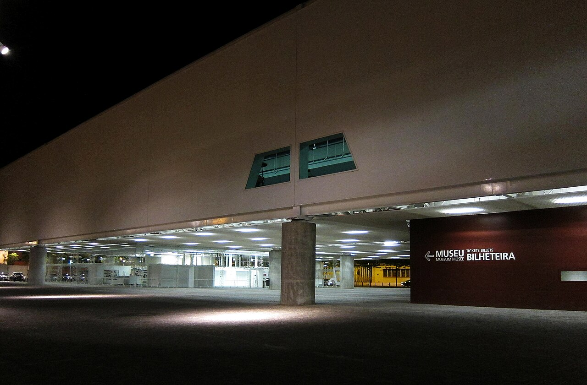
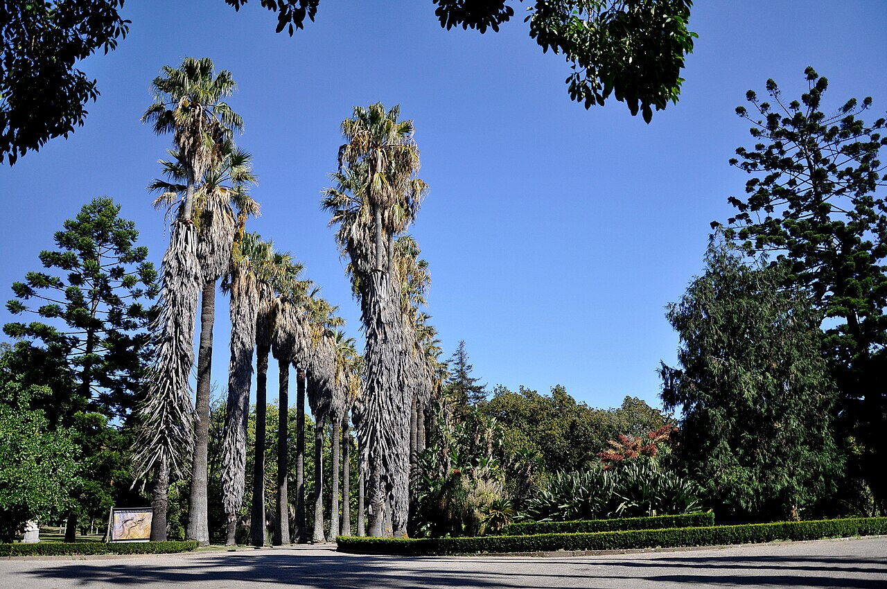
The graceful way to un-cut Belém: you still skip exactly what Julie flagged — the Jerónimos interior and its queues — and spend the morning on the things that are actually your register. The Coach Museum is a Pritzker-winner's building wrapped around royal carriages (cool, indoor, quick); the Tropical Garden is a hushed, shaded run for the kids; MAAT's white wave-roof is a walk-over from the outside; and the original Pastéis de Belém is right there.
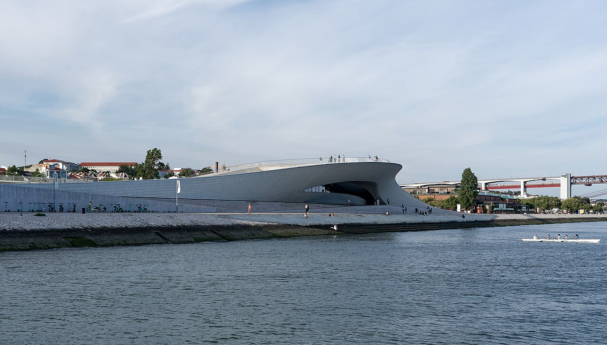
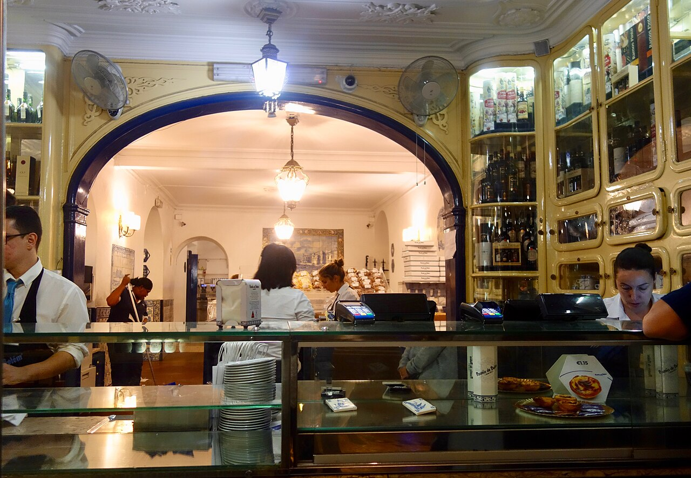
a great private collection in one of Europe's best modern gardens
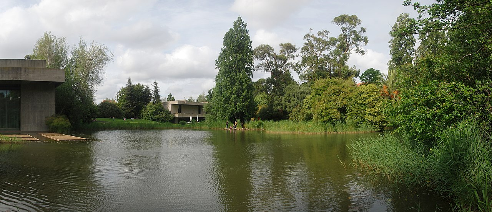
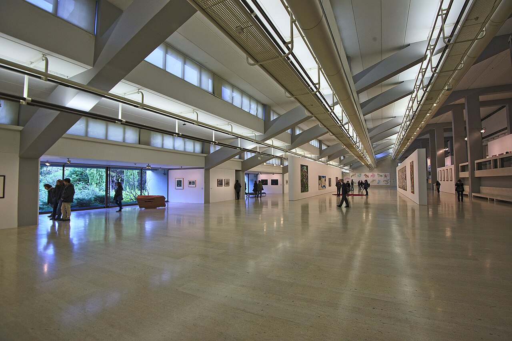
The most grown-up option, and arguably the single most tasteful morning in the city: Calouste Gulbenkian's collection (Lalique, Islamic art, the lot) set in a landmark modernist garden of ponds, ducks and shade, with the reworked CAM modern-art wing and a Kengo Kuma garden canopy. Calm and beautiful — best if the kids are in a garden-and-pond mood rather than a run-wild one, and it's a small cross-town hop rather than west-side.
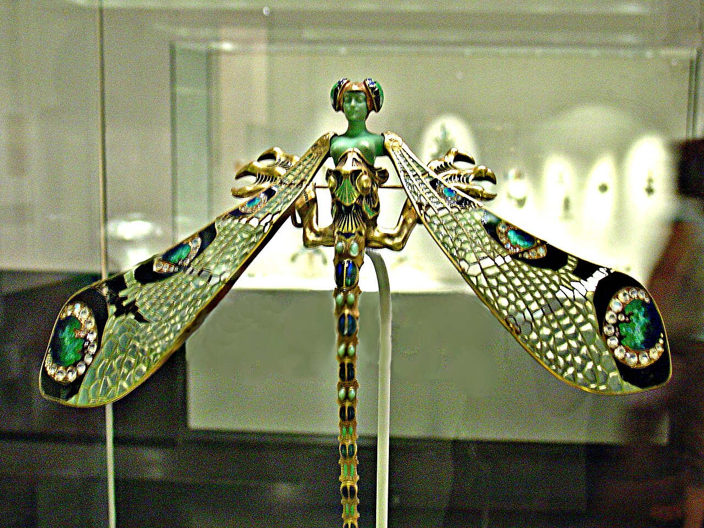
a low-key neighbourhood morning, half-way to the lunch
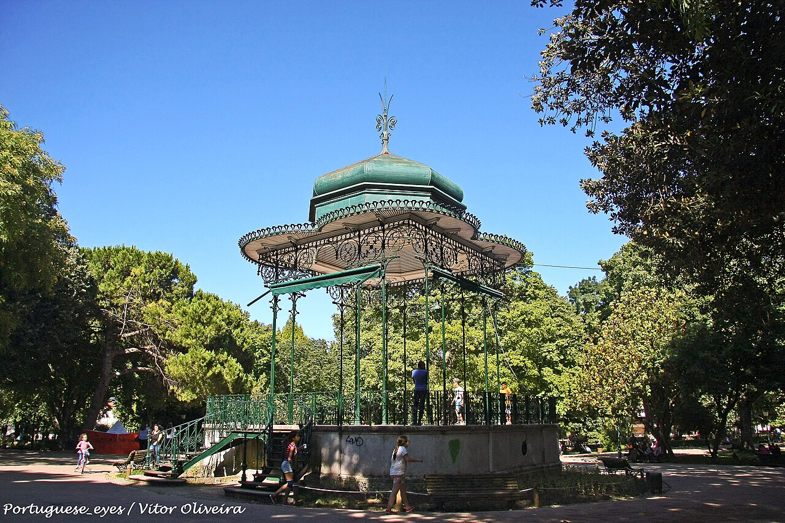
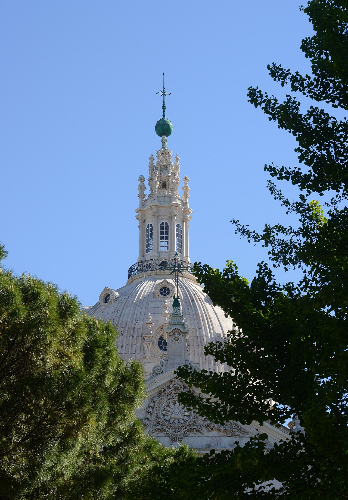
The gentlest of the four and the most local: the Jardim da Estrela has a fenced playground, a duck pond and a café under old trees, with the domed basilica across the road; ten minutes on, Campo de Ourique is a proper residential neighbourhood with a tidy food market and good coffee. No tickets, no rush — the easiest morning with five small children, if a little less of a "destination."
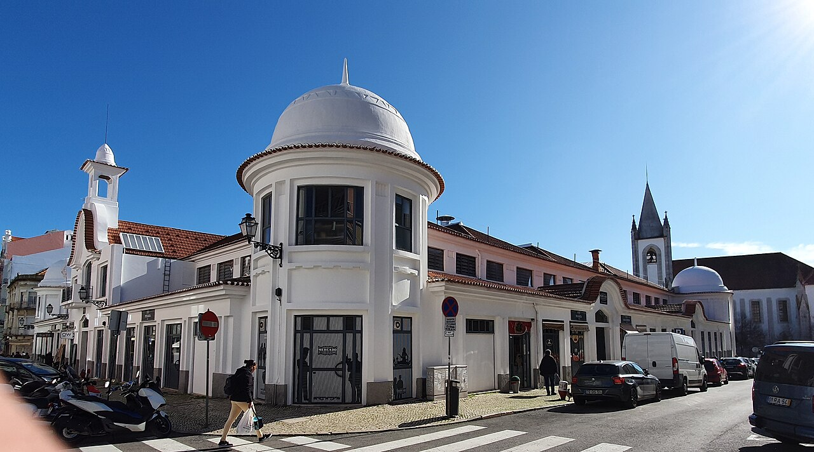
the crowd-pleaser — honest about the trade-off
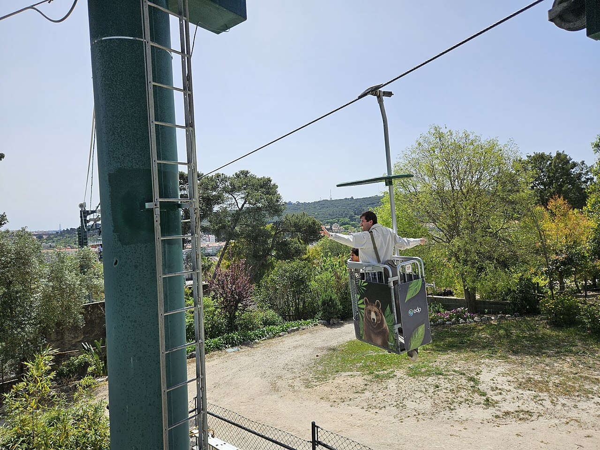
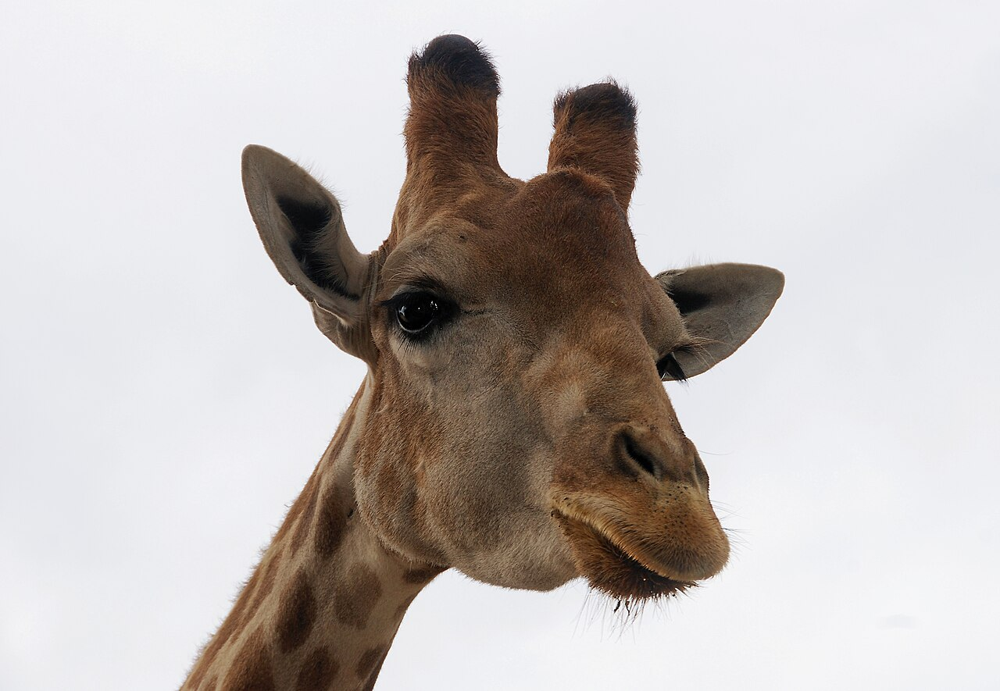
Included because it's the obvious kid magnet — a cable car over the grounds, a children's farm, reptile house — and the five of them would love it. But it's the least "you" of the four: a busy half-day commitment that eats the morning and most of the budget, and it pulls against the design-led tone of the rest of the trip. Worth it only if the day is really about the kids cashing in.
Back to → Lisbon, Day 2 · Day 1